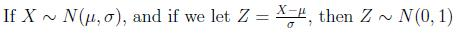

Normal Distribution
Lead Author(s): Erin Dienes
The Normal distribution (also known as the Gaussian distribution or a “bell curve”) is a type of pattern that a numeric variable may follow. Many statistical methods assume that random variation in the numbers being analyzed follow a Normal distribution, and this is often a reasonable approximation because of the central limit theorem. The normal distribution is symmetric about its mean and its spread is determined by the value of its standard deviation.
The probability distribution for a normal random variable x is provided below:
The standard normal distribution is a normal distribution with mean equal to 0 and standard deviation equal to 1. In order to determine probabilities of the normal distribution we must first standardize the normal random variable. This transformation is provided below:

-- ErinEsp - 12 Apr 2010